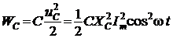
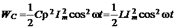
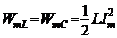
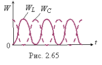

Для режима резонанса напряжений (u = Umsinωt, i = Imsinωt, φ = 0), напряжение на ёмкостном элементе контура
uC = XCImsin(ωt − π/2) = −XCImcosωt,
а энергия WL, запасаемая в магнитном поле
индуктивной катушки, и энергия WC, запасаемая в электрическом поле конденсатора:
и .
После подстановки ёмкостного сопротивления в выражение энергии

замечаем, что амплитуда колебаний электрической энергии в электрическом поле конденсатора равна амплитуде колебаний магнитной энергии в магнитном поле катушки, т.е. , а сумма магнитной и электрической энергии в контуре постоянна и равна
.

Итак, при резонансе напряжений общая накопленная энергия в контуре остаётся неизменной, при этом магнитная энергия WL изменяется во времени по закону квадрата синуса, а электрическая энергия WC − по закону квадрата косинуса (рис. 2.65). Это означает, что в контуре происходит обмен энергией между элементами L и C без затрат энергии источника энергии е(t) при R --> 0.
В реальном контуре R ≠ 0, процесс обмена энергией между элементами L и C сопровождается потреблением энергии WR = Ri2t источника, которая идёт на поддержание указанного обмена (без энергии извне он затухает) и необратимо преобразуется в тепловую энергию в резисторе R. В идеальном контуре (R = 0) колебательный процесс идёт без потребления энергии извне и имеет незатухающий характер.